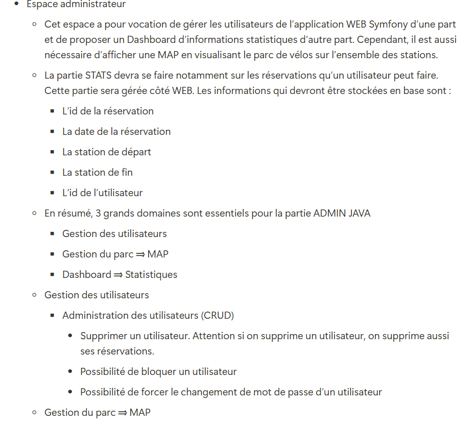
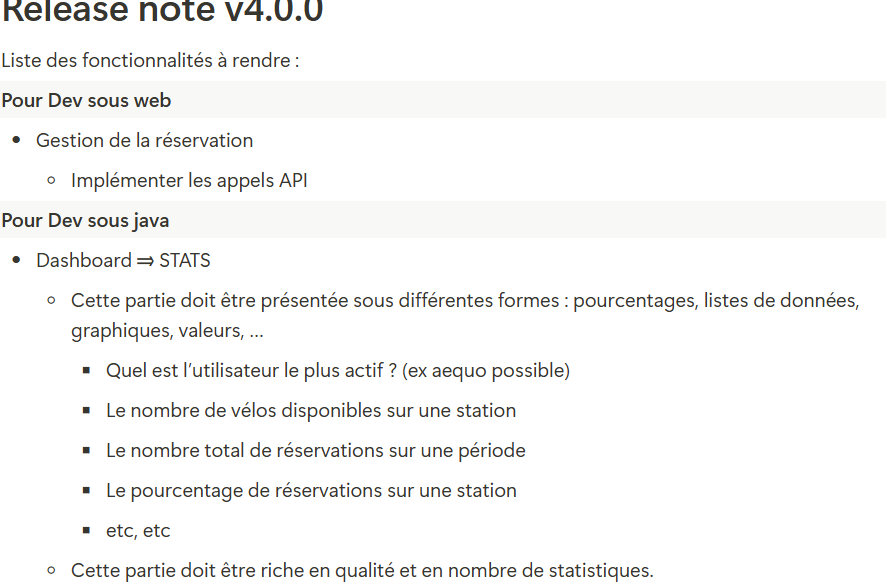

Projet Véliko
Application de gestion de vélos en libre-service
Système complet avec interface web (PHP/Symfony) et application Java pour l'administration, intégrant l'API Vélib' pour la gestion en temps réel des stations de Paris et Île-de-France
Introduction

L'objectif de Veliko est de fournir une application mobile et web permettant aux utilisateurs de connaître en temps réel la disponibilité des vélos classiques et électriques dans les stations de Paris et de l’Île-de-France. Le projet vise à faciliter la mobilité urbaine en répondant aux attentes d’une clientèle variée, grâce à des fonctionnalités telles que la géolocalisation, le suivi des stations, et l'inscription des utilisateurs. En complément, une interface administrateur est prévue pour gérer efficacement les utilisateurs de l’application et le parc de vélos, tout en permettant un suivi statistique des réservations et de l’usage du service.
Outils et Langage Utilisé

PHP

CSS

HTML

GitHub

Symfony

Docker

API Veli'b

MySql
Version Web
Version 1.0

Version 2.0

Démonstration Web

Page d'accueil
Interface principale de l'application

Carte interactive
Localisation des stations de vélos

Inscription
Création de compte utilisateur

Connexion
Authentification utilisateur

Carte (connecté)
Vue utilisateur authentifié

Profil utilisateur
Gestion du compte

Informations
Détails du profil

Mot de passe
Modification sécurisée

Suppression compte
Gestion de la suppression

Stations favorites
Liste des favoris

Ajouter favoris
Enregistrer une station
Version Java
Version 3.0
Version 4.0
Démonstration Java
Connexion Admin
Interface d'authentification administrateur
Dashboard
Tableau de bord principal
Gestion Utilisateurs
Administration des comptes
Gestion du Parc
Gestion des vélos et stations
Réservations
Suivi des réservations
Statistiques
Dashboard des statistiques
Stats Utilisateurs
Statistiques des utilisateurs
Stats Stations
Statistiques des stations
Stats Réservations
Statistiques des réservations
Les difficultés rencontrés
Durant ce projet j'ai eu difficulté sur la gestion des emails, durant cette tache j'ai eu des problèmes sur la gestion pour savoir si l'utilisateur est vérifié ou pas et sur la direction des pages
J'ai eu aussi des difficultés sur lorsque même si l'utiliseur n'étais pas vérifié il pouvait se connecter
J'ai aussi eu des problèmes sur le générateur de mot de passe car le mot de passe n'étais pas assez sécuriser et ne voulais pas mettre tous les caractères pour un mot de passe fort
Pour créer les statistiques j'ai eu des problèmes sur l'idée de statistique a faire par exemple pour créer une stat faut réfléchir à quoi elle sert qu'est ce que je cherche à faire avec celle-ci etc...